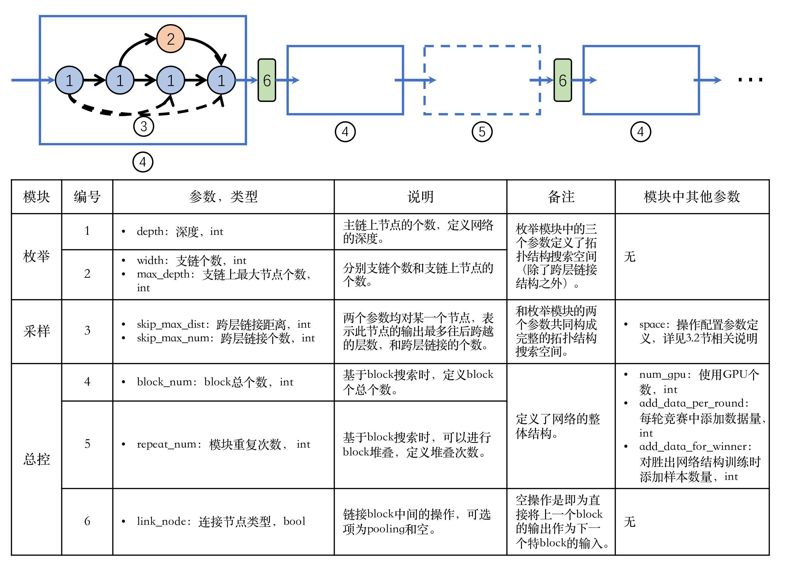

工程概述¶
NAS (Neural Architecture Search) 算法，一种用于自动搜索比人工设计表现更优异的神经网络的自动机器学习算法。
本项网络结构搜索技术将网络结构视为一个有向无环图（DAG），图中的每一条边表示数据流向，每一个节点表示对数据的操作。在搜索过程中，将搜索分为两部分，第一部分是对DAG图的拓扑结构进行搜索，第二部分是在拓扑结构上对每个节点的操作配置进行优化。并采用竞争的方式将二者进行结合，得到最终的网络结构。
对于拓扑结构的搜索，我们采用枚举的方式得到所有可能的拓扑结构，此时拓扑结构上仅有数据流向，并没有对每个节点赋予操作配置；我们对每个拓扑结构上的操作配置视为一个黑盒优化问题，利用非梯度优化算法进行求解。所以在搜索之前我们需要对拓扑结构空间（网络的深度和宽度）和操作配置空间（每个节点上的候选操作）进行设置。在通过竞赛确定最优网络结构时，需要利用一个评估子程序对每个网络结构进行评估，所以对于具体任务需要定制评估标准和评估程序。
对于整体网络结构搜索，我们采用基于block的搜索模式进行，即对于较深的网络，我们先搜索第一个block，在确定第一个block之后再搜索第二个block，依次类推，完成整个网络结构的搜索。当只设置有一个block的时候就退化为直接对整体网络结构进行搜索。下图示意了基于block的网络搜索过程，并给出了在每个部分中的控制参数。
工程主要分为五个部份：
- Enumerater: 穷举网络结构，产生多个候选网络。
- Predictor: 根据人类的先验知识，初始化合适的网络节点配置。
- Evaluator: 评估网络表现结果，用来判断网络结构的优劣。
- Sampler, Optimizer: 节点配置采样和优化，提升网络的表现。
工程总控的总体搜索过程：
- 初始化候选网络池 (Enumerater, Predictor)
- 评估网络结构的表现 (Evaluator)
- 根据评估结果，进行淘汰竞赛，从网络池中删去劣等的网络结构
- 对于存活的网络，采样和优化网络节点配置 (Sampler, Optimizer)
- 反复竞赛之后，最终将挑选出优胜的网络
- 以优胜的网络为前置网络模块，接在下一轮竞赛的网络结构前面。
- NAS算法得到以优胜的网络组成链状网络模块，作为最佳网络结构返回